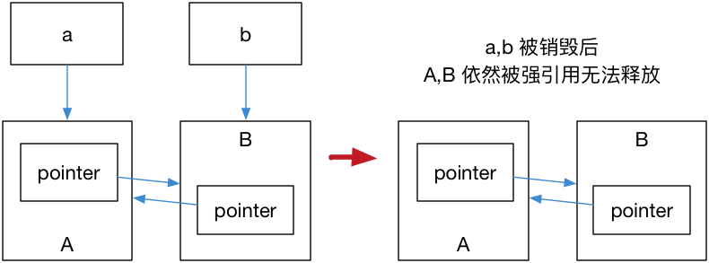
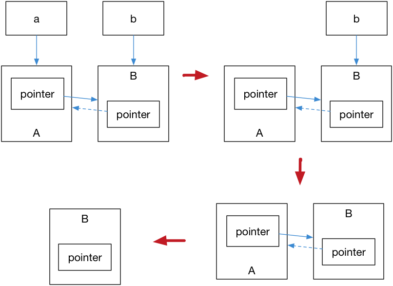

列表初始化
#include <iostream>
using namespace std;
typedef struct _Info {
string szStr;
int nValue;
}Info, *PInfo;
Info GetInfo() {
return { "hello", 110 };
}
int main() {
Info info = GetInfo();
cout << info.szStr << endl << info.nValue << endl;
system("pause");
return 0;
}
类相关
一些初始操作
class CA {
public：
CA() = delete; // 删除默认构造函数
CA() = default; // 使用默认的构造函数
new = delete; // 那么 CA *pObj = new CA; 将会失效
}
联合体 Union
union MyUnion {
MyUnion(); // 加强型 uni31on
~MyUnion();
string szStr; // 存在非基础类型，需要构造和析构函数
}
实现一个模板数组
```
# 智能指针
> 引用计数这种计数是为了防止内存泄露而产生的。 基本想法是对于动态分配的对象，进行引用计数，每当增加一次对同一个对象的引用，那么引用对象的引用计数就会增加一次， 每删除一次引用，引用计数就会减一，当一个对象的引用计数减为零时，就自动删除指向的堆内存。
>
> C++11 引入了智能指针的概念，使用了引用计数的想法，让程序员不再需要关心手动释放内存。 这些智能指针包括 `std::shared_ptr` / `std::unique_ptr` / `std::weak_ptr`，使用它们需要包含头文件 `<memory>`。
>
> **注意：**
>
> * **引用计数不是垃圾回收，引用计数能够尽快收回不再被使用的对象，同时在回收的过程中也不会造成长时间的等待， 更能够清晰明确的表明资源的生命周期。**
> * **引用计数，有多少个指针指向这块内存**
## `std::shared_ptr`
> `std::shared_ptr` 是一种共享式智能指针，它能够记录多少个 `shared_ptr` 共同指向一个对象，从而消除显式的调用 `delete`，当引用计数变为零的时候就会将对象自动删除。
>
> 但还不够，因为使用 `std::shared_ptr` 仍然需要使用 `new` 来调用，这使得代码出现了某种程度上的不对称。
>
> `std::make_shared` 就能够用来消除显式的使用 `new`，所以 `std::make_shared` 会分配创建传入参数中的对象， 并返回这个对象类型的 `std::shared_ptr` 指针。
```cpp
auto pointer
auto pointer = std::make_shared<int>(10);
strong refs
#include <iostream>
#include <string>
using namespace std;
int main() {
//auto pointer = new int(10);
std::shared_ptr<int> objA(new int(110));
// + objA shared_ptr 110 [1 strong refs] [default] std::shared_ptr<int>
auto pointer = std::make_shared<int>(111);
cout << *objA << endl;
cout << *pointer << endl;
std::shared_ptr<int> objB(objA); // 执行这句之后
// + objA shared_ptr 110 [2 strong refs] [default] std::shared_ptr<int>
// + objB shared_ptr 110 [2 strong refs] [default] std::shared_ptr<int>
std::shared_ptr<int> objC(new int(0));
// + objC shared_ptr 0 [1 strong ref] [default] std::shared_ptr<int>
objC = objA;
// + objC shared_ptr 110 [3 strong refs] [default] std::shared_ptr<int>
system("pause");
return 0;
}
std::shared_ptr 可以通过 get() 方法来获取原始指针，通过 reset() 来减少一个引用计数， 并通过 use_count() 来查看一个对象的引用计数。【智能指针】
auto pointer = std::make_shared<int>(10);
auto pointer2 = pointer; // 引用计数 +1
auto pointer3 = pointer; // 引用计数 +1
int *p = pointer.get(); // 这样不会增加引用计数
std::unique_ptr
std::unique_ptr 是一种独占的智能指针，它禁止其他智能指针与其共享同一个对象，从而保证代码的安全。
std::unique_ptr<int> pointer = std::make_unique<int>(10); // make_unique 从 C++14 引入
std::unique_ptr<int> pointer2 = pointer; // 非法
make_unique 并不复杂，C++11 没有提供 std::make_unique，可以自行实现：
template<typename T, typename ...Args>
std::unique_ptr<T> make_unique( Args && ...args ) { // 右值引用
return std::unique_ptr<T>( new T( std::forward<Args>(args)... ) );
}
至于为什么没有提供，C++ 标准委员会主席 Herb Sutter 在他的博客中提到原因是因为『被他们忘记了』。
既然是独占，换句话说就是不可复制。但是，我们可以利用 std::move 将其转移给其他的 unique_ptr。
std::unique_ptr<Foo> p1(std::make_unique<Foo>());
std::unique_ptr<Foo> p2(std::move(p1));
std::weak_ptr
为了 解决std::shared_ptr 依然存在着资源无法释放的问题。需要使用到 std::weak_ptr 是一种弱引用（相比较而言 std::shared_ptr 就是一种强引用）。弱引用不会引起引用计数增加。
无法释放 e.g
struct A;
struct B;
struct A {
std::shared_ptr<B> pointer;
~A() {
std::cout << "A 被销毁" << std::endl;
}
};
struct B {
std::shared_ptr<A> pointer;
~B() {
std::cout << "B 被销毁" << std::endl;
}
};
int main() {
auto a = std::make_shared<A>();
auto b = std::make_shared<B>();
a->pointer = b;
b->pointer = a;
}
运行结果是 A, B 都不会被销毁，这是因为 a,b 内部的 pointer 同时又引用了 a,b，这使得 a,b 的引用计数均变为了 2，而离开作用域时，a,b 智能指针被析构，却只能造成这块区域的引用计数减一，这样就导致了 a,b 对象指向的内存区域引用计数不为零，而外部已经没有办法找到这块区域了，也就造成了内存泄露。下断点调试可以看到，已经炸裂了...
#include <iostream>
#include <string>
using namespace std;
struct A;
struct B;
struct A {
std::shared_ptr<B> pointer;
~A() {
std::cout << "A 被销毁" << std::endl;
}
};
struct B {
std::shared_ptr<A> pointer;
~B() {
std::cout << "B 被销毁" << std::endl;
}
};
int main() {
auto a = std::make_shared<A>();
// + a shared_ptr {pointer=empty } [1 strong ref] [{_Storage={_Value={pointer=empty } } }] std::shared_ptr<A>
auto b = std::make_shared<B>();
// + b shared_ptr {pointer=empty } [1 strong ref] [{_Storage={_Value={pointer=empty } } }] std::shared_ptr<B>
a->pointer = b;
// + a shared_ptr {pointer=shared_ptr {pointer=empty } [2 strong refs] [{_Storage={_Value={pointer=empty } } }] } [1 strong ref] [{_Storage={_Value={pointer=shared_ptr {pointer=empty } [2 strong refs] [{_Storage={_Value={pointer=empty } } }] } } }] std::shared_ptr<A>
// + a->pointer shared_ptr {pointer=empty } [2 strong refs] [{_Storage={_Value={pointer=empty } } }] std::shared_ptr<B>
b->pointer = a;
// + b shared_ptr {pointer=empty } [2 strong refs] [{_Storage={_Value={pointer=empty } } }] std::shared_ptr<B>
// + b shared_ptr {pointer=shared_ptr {pointer=shared_ptr {pointer=shared_ptr {pointer=shared_ptr {pointer=shared_ptr {pointer=shared_ptr {pointer=shared_ptr {pointer=shared_ptr {pointer=shared_ptr {pointer=shared_ptr {pointer=shared_ptr {pointer=shared_ptr {pointer=shared_ptr {pointer=shared_ptr {pointer=shared_ptr {pointer=shared_ptr {pointer=shared_ptr {pointer=shared_ptr {pointer=shared_ptr {pointer=shared_ptr {pointer=shared_ptr {pointer=shared_ptr {pointer=shared_ptr {pointer=shared_ptr {pointer=shared_ptr {pointer=shared_ptr {pointer=shared_ptr {pointer=shared_ptr {pointer=shared_ptr {pointer=shared_ptr {pointer=shared_ptr {pointer=shared_ptr {pointer=shared_ptr {pointer=shared_ptr {pointer=shared_ptr {pointer=shared_ptr {pointer=shared_ptr {pointer=shared_ptr {pointer=shared_ptr {pointer=shared_ptr {pointer=shared_ptr {pointer=shared_ptr {pointer=shared_ptr {pointer=shared_ptr {pointer=shared_ptr {pointer=shared_ptr {pointer=shared_ptr {pointer=shared_ptr {pointer=shared_ptr {...} [2 strong refs] [{...}] } [2 strong refs] [{_Storage={_Value={...} } }] } [2 strong refs] [{_Storage={_Value={pointer=shared_ptr {...} [2 strong refs] [{_Storage={...} }] } } }] } [2 strong refs] [{_Storage={_Value={pointer=shared_ptr {pointer=shared_ptr {...} [2 strong refs] [{_Storage={...} }] } [2 strong refs] [{_Storage={_Value={pointer=shared_ptr [2 strong refs] [] } } }] } } }] } [2 strong refs] [{_Storage={_Value={pointer=shared_ptr {pointer=shared_ptr {pointer=shared_ptr {...} [2 strong refs] [{_Storage={...} }] } [2 strong refs] [{_Storage={_Value={pointer=shared_ptr [2 strong refs] [] } } }] } [2 strong refs] [{_Storage={_Value={pointer=shared_ptr {pointer=shared_ptr [2 strong refs] [] } [2 strong refs] [{_Storage={...} }] } } }] } } }] } [2 strong refs] [{_Storage={_Value={pointer=shared_ptr {pointer=shared_ptr {pointer=shared_ptr {pointer=shared_ptr {...} [2 strong refs] [{_Storage={...} }] } [2 strong refs] [{_Storage={_Value={pointer=shared_ptr [2 strong refs] [] } } }] } [2 strong refs] [{_Storage={_Value={pointer=shared_ptr {pointer=shared_ptr [2 strong refs] [] } [2 strong refs] [{_Storage={...} }] } } }] } [2 strong refs] [{_Storage={_Value={pointer=shared_ptr {pointer=shared_ptr {pointer=shared_ptr [2 strong refs] [] } [2 strong refs] [{_Storage={...} }] } [2 strong refs] [{_Storage={_Value={pointer=shared_ptr [2 strong refs] [{...}] } } }] } } }] } } }] } [2 strong refs] [{_Storage={_Value={pointer=shared_ptr {pointer=shared_ptr {pointer=shared_ptr {pointer=shared_ptr {pointer=shared_ptr {...} [2 strong refs] [{_Storage={...} }] } [2 strong refs] [{_Storage={_Value={pointer=shared_ptr [2 strong refs] [] } } }] } [2 strong refs] [{_Storage={_Value={pointer=shared_ptr {pointer=shared_ptr [2 strong refs] [] } [2 strong refs] [{_Storage={...} }] } } }] } [2 strong refs] [{_Storage={_Value={pointer=shared_ptr {pointer=shared_ptr {pointer=shared_ptr [2 strong refs] [] } [2 strong refs] [{_Storage={...} }] } [2 strong refs] [{_Storage={_Value={pointer=shared_ptr [2 strong refs] [{...}] } } }] } } }] } [2 strong refs] [{_Storage={_Value={pointer=shared_ptr {pointer=shared_ptr {pointer=shared_ptr {pointer=shared_ptr [2 strong refs] [] } [2 strong refs] [{_Storage={...} }] } [2 strong refs] [{_Storage={_Value={pointer=shared_ptr [2 strong refs] [{...}] } } }] } [2 strong refs] [{_Storage={_Value={pointer=shared_ptr {pointer=shared_ptr [2 strong refs] [{...}] } [2 strong refs] [{_Storage={_Value={...} } }] } } }] } } }] } } }] } [2 strong refs] [{_Storage={_Value={pointer=shared_ptr {pointer=shared_ptr {pointer=shared_ptr {pointer=shared_ptr {pointer=shared_ptr {pointer=shared_ptr {...} [2 strong refs] [{_Storage={...} }] } [2 strong refs] [{_Storage={_Value={pointer=shared_ptr [2 strong refs] [] } } }] } [2 strong refs] [{_Storage={_Value={pointer=shared_ptr {pointer=shared_ptr [2 strong refs] [] } [2 strong refs] [{_Storage={...} }] } } }] } [2 strong refs] [{_Storage={_Value={pointer=shared_ptr {pointer=shared_ptr {pointer=shared_ptr [2 strong refs] [] } [2 strong refs] [{_Storage={...} }] } [2 strong refs] [{_Storage={_Value={pointer=shared_ptr [2 strong refs] [{...}] } } }] } } }] } [2 strong refs] [{_Storage={_Value={pointer=shared_ptr {pointer=shared_ptr {pointer=shared_ptr {pointer=shared_ptr [2 strong refs] [] } [2 strong refs] [{_Storage={...} }] } [2 strong refs] [{_Storage={_Value={pointer=shared_ptr [2 strong refs] [{...}] } } }] } [2 strong refs] [{_Storage={_Value={pointer=shared_ptr {pointer=shared_ptr [2 strong refs] [{...}] } [2 strong refs] [{_Storage={_Value={...} } }] } } }] } } }] } [2 strong refs] [{_Storage={_Value={pointer=shared_ptr {pointer=shared_ptr {pointer=shared_ptr {pointer=shared_ptr {pointer=shared_ptr [2 strong refs] [] } [2 strong refs] [{_Storage={...} }] } [2 strong refs] [{_Storage={_Value={pointer=shared_ptr [2 strong refs] [{...}] } } }] } [2 strong refs] [{_Storage={_Value={pointer=shared_ptr {pointer=shared_ptr [2 strong refs] [{...}] } [2 strong refs] [{_Storage={_Value={...} } }] } } }] } [2 strong refs] [{_Storage={_Value={pointer=shared_ptr {pointer=shared_ptr {pointer=shared_ptr [2 strong refs] [{...}] } [2 strong refs] [{_Storage={_Value={...} } }] } [2 strong refs] [{_Storage={_Value={pointer=shared_ptr {...} [2 strong refs] [{...}] } } }] } } }] } } }] } } }] } [2 strong refs] [{_Storage={_Value={pointer=shared_ptr {pointer=shared_ptr {pointer=shared_ptr {pointer=shared_ptr {pointer=shared_ptr {pointer=shared_ptr {pointer=shared_ptr {...} [2 strong refs] [{_Storage={...} }] } [2 strong refs] [{_Storage={_Value={pointer=shared_ptr [2 strong refs] [] } } }] } [2 strong refs] [{_Storage={_Value={pointer=shared_ptr {pointer=shared_ptr [2 strong refs] [] } [2 strong refs] [{_Storage={...} }] } } }] } [2 strong refs] [{_Storage={_Value={pointer=shared_ptr {pointer=shared_ptr {pointer=shared_ptr [2 strong refs] [] } [2 strong refs] [{_Storage={...} }] } [2 strong refs] [{_Storage={_Value={pointer=shared_ptr [2 strong refs] [{...}] } } }] } } }] } [2 strong refs] [{_Storage={_Value={pointer=shared_ptr {pointer=shared_ptr {pointer=shared_ptr {pointer=shared_ptr [2 strong refs] [] } [2 strong refs] [{_Storage={...} }] } [2 strong refs] [{_Storage={_Value={pointer=shared_ptr [2 strong refs] [{...}] } } }] } [2 strong refs] [{_Storage={_Value={pointer=shared_ptr {pointer=shared_ptr [2 strong refs] [{...}] } [2 strong refs] [{_Storage={_Value={...} } }] } } }] } } }] } [2 strong refs] [{_Storage={_Value={pointer=shared_ptr {pointer=shared_ptr {pointer=shared_ptr {pointer=shared_ptr {pointer=shared_ptr [2 strong refs] [] } [2 strong refs] [{_Storage={...} }] } [2 strong refs] [{_Storage={_Value={pointer=shared_ptr [2 strong refs] [{...}] } } }] } [2 strong refs] [{_Storage={_Value={pointer=shared_ptr {pointer=shared_ptr [2 strong refs] [{...}] } [2 strong refs] [{_Storage={_Value={...} } }] } } }] } [2 strong refs] [{_Storage={_Value={pointer=shared_ptr {pointer=shared_ptr {pointer=shared_ptr [2 strong refs] [{...}] } [2 strong refs] [{_Storage={_Value={...} } }] } [2 strong refs] [{_Storage={_Value={pointer=shared_ptr {...} [2 strong refs] [{...}] } } }] } } }] } } }] } [2 strong refs] [{_Storage={_Value={pointer=shared_ptr {pointer=shared_ptr {pointer=shared_ptr {pointer=shared_ptr {pointer=shared_ptr {pointer=shared_ptr [2 strong refs] [] } [2 strong refs] [{_Storage={...} }] } [2 strong refs] [{_Storage={_Value={pointer=shared_ptr [2 strong refs] [{...}] } } }] } [2 strong refs] [{_Storage={_Value={pointer=shared_ptr {pointer=shared_ptr [2 strong refs] [{...}] } [2 strong refs] [{_Storage={_Value={...} } }] } } }] } [2 strong refs] [{_Storage={_Value={pointer=shared_ptr {pointer=shared_ptr {pointer=shared_ptr [2 strong refs] [{...}] } [2 strong refs] [{_Storage={_Value={...} } }] } [2 strong refs] [{_Storage={_Value={pointer=shared_ptr {...} [2 strong refs] [{...}] } } }] } } }] } [2 strong refs] [{_Storage={_Value={pointer=shared_ptr {pointer=shared_ptr {pointer=shared_ptr {pointer=shared_ptr [2 strong refs] [{...}] } [2 strong refs] [{_Storage={_Value={...} } }] } [2 strong refs] [{_Storage={_Value={pointer=shared_ptr {...} [2 strong refs] [{...}] } } }] } [2 strong refs] [{_Storage={_Value={pointer=shared_ptr {pointer=shared_ptr {...} [2 strong refs] [{...}] } [2 strong refs] [{_Storage={_Value={...} } }] } } }] } } }] } } }] } } }] } [2 strong refs] [{_Storage={_Value={pointer=shared_ptr {pointer=shared_ptr {pointer=shared_ptr {pointer=shared_ptr {pointer=shared_ptr {pointer=shared_ptr {pointer=shared_ptr {pointer=shared_ptr {...} [2 strong refs] [{_Storage={...} }] } [2 strong refs] [{_Storage={_Value={pointer=shared_ptr [2 strong refs] [] } } }] } [2 strong refs] [{_Storage={_Value={pointer=shared_ptr {pointer=shared_ptr [2 strong refs] [] } [2 strong refs] [{_Storage={...} }] } } }] } [2 strong refs] [{_Storage={_Value={pointer=shared_ptr {pointer=shared_ptr {pointer=shared_ptr [2 strong refs] [] } [2 strong refs] [{_Storage={...} }] } [2 strong refs] [{_Storage={_Value={pointer=shared_ptr [2 strong refs] [{...}] } } }] } } }] } [2 strong refs] [{_Storage={_Value={pointer=shared_ptr {pointer=shared_ptr {pointer=shared_ptr {pointer=shared_ptr [2 strong refs] [] } [2 strong refs] [{_Storage={...} }] } [2 strong refs] [{_Storage={_Value={pointer=shared_ptr [2 strong refs] [{...}] } } }] } [2 strong refs] [{_Storage={_Value={pointer=shared_ptr {pointer=shared_ptr [2 strong refs] [{...}] } [2 strong refs] [{_Storage={_Value={...} } }] } } }] } } }] } [2 strong refs] [{_Storage={_Value={pointer=shared_ptr {pointer=shared_ptr {pointer=shared_ptr {pointer=shared_ptr {pointer=shared_ptr [2 strong refs] [] } [2 strong refs] [{_Storage={...} }] } [2 strong refs] [{_Storage={_Value={pointer=shared_ptr [2 strong refs] [{...}] } } }] } [2 strong refs] [{_Storage={_Value={pointer=shared_ptr {pointer=shared_ptr [2 strong refs] [{...}] } [2 strong refs] [{_Storage={_Value={...} } }] } } }] } [2 strong refs] [{_Storage={_Value={pointer=shared_ptr {pointer=shared_ptr {pointer=shared_ptr [2 strong refs] [{...}] } [2 strong refs] [{_Storage={_Value={...} } }] } [2 strong refs] [{_Storage={_Value={pointer=shared_ptr {...} [2 strong refs] [{...}] } } }] } } }] } } }] } [2 strong refs] [{_Storage={_Value={pointer=shared_ptr {pointer=shared_ptr {pointer=shared_ptr {pointer=shared_ptr {pointer=shared_ptr {pointer=shared_ptr [2 strong refs] [] } [2 strong refs] [{_Storage={...} }] } [2 strong refs] [{_Storage={_Value={pointer=shared_ptr [2 strong refs] [{...}] } } }] } [2 strong refs] [{_Storage={_Value={pointer=shared_ptr {pointer=shared_ptr [2 strong refs] [{...}] } [2 strong refs] [{_Storage={_Value={...} } }] } } }] } [2 strong refs] [{_Storage={_Value={pointer=shared_ptr {pointer=shared_ptr {pointer=shared_ptr [2 strong refs] [{...}] } [2 strong refs] [{_Storage={_Value={...} } }] } [2 strong refs] [{_Storage={_Value={pointer=shared_ptr {...} [2 strong refs] [{...}] } } }] } } }] } [2 strong refs] [{_Storage={_Value={pointer=shared_ptr {pointer=shared_ptr {pointer=shared_ptr {pointer=shared_ptr [2 strong refs] [{...}] } [2 strong refs] [{_Storage={_Value={...} } }] } [2 strong refs] [{_Storage={_Value={pointer=shared_ptr {...} [2 strong refs] [{...}] } } }] } [2 strong refs] [{_Storage={_Value={pointer=shared_ptr {pointer=shared_ptr {...} [2 strong refs] [{...}] } [2 strong refs] [{_Storage={_Value={...} } }] } } }] } } }] } } }] } [2 strong refs] [{_Storage={_Value={pointer=shared_ptr {pointer=shared_ptr {pointer=shared_ptr {pointer=shared_ptr {pointer=shared_ptr {pointer=shared_ptr {pointer=shared_ptr [2 strong refs] [] } [2 strong refs] [{_Storage={...} }] } [2 strong refs] [{_Storage={_Value={pointer=shared_ptr [2 strong refs] [{...}] } } }] } [2 strong refs] [{_Storage={_Value={pointer=shared_ptr {pointer=shared_ptr [2 strong refs] [{...}] } [2 strong refs] [{_Storage={_Value={...} } }] } } }] } [2 strong refs] [{_Storage={_Value={pointer=shared_ptr {pointer=shared_ptr {pointer=shared_ptr [2 strong refs] [{...}] } [2 strong refs] [{_Storage={_Value={...} } }] } [2 strong refs] [{_Storage={_Value={pointer=shared_ptr {...} [2 strong refs] [{...}] } } }] } } }] } [2 strong refs] [{_Storage={_Value={pointer=shared_ptr {pointer=shared_ptr {pointer=shared_ptr {pointer=shared_ptr [2 strong refs] [{...}] } [2 strong refs] [{_Storage={_Value={...} } }] } [2 strong refs] [{_Storage={_Value={pointer=shared_ptr {...} [2 strong refs] [{...}] } } }] } [2 strong refs] [{_Storage={_Value={pointer=shared_ptr {pointer=shared_ptr {...} [2 strong refs] [{...}] } [2 strong refs] [{_Storage={_Value={...} } }] } } }] } } }] } [2 strong refs] [{_Storage={_Value={pointer=shared_ptr {pointer=shared_ptr {pointer=shared_ptr {pointer=shared_ptr {pointer=shared_ptr [2 strong refs] [{...}] } [2 strong refs] [{_Storage={_Value={...} } }] } [2 strong refs] [{_Storage={_Value={pointer=shared_ptr {...} [2 strong refs] [{...}] } } }] } [2 strong refs] [{_Storage={_Value={pointer=shared_ptr {pointer=shared_ptr {...} [2 strong refs] [{...}] } [2 strong refs] [{_Storage={_Value={...} } }] } } }] } [2 strong refs] [{_Storage={_Value={pointer=shared_ptr {pointer=shared_ptr {pointer=shared_ptr {...} [2 strong refs] [{...}] } [2 strong refs] [{_Storage={_Value={...} } }] } [2 strong refs] [{_Storage={_Value={pointer=shared_ptr {...} [2 strong refs] [{_Storage={...} }] } } }] } } }] } } }] } } }] } } }] } [2 strong refs] [{_Storage={_Value={pointer=shared_ptr {pointer=shared_ptr {pointer=shared_ptr {pointer=shared_ptr {pointer=shared_ptr {pointer=shared_ptr {pointer=shared_ptr {pointer=shared_ptr {pointer=shared_ptr {...} [2 strong refs] [{_Storage={...} }] } [2 strong refs] [{_Storage={_Value={pointer=shared_ptr [2 strong refs] [] } } }] } [2 strong refs] [{_Storage={_Value={pointer=shared_ptr {pointer=shared_ptr [2 strong refs] [] } [2 strong refs] [{_Storage={...} }] } } }] } [2 strong refs] [{_Storage={_Value={pointer=shared_ptr {pointer=shared_ptr {pointer=shared_ptr [2 strong refs] [] } [2 strong refs] [{_Storage={...} }] } [2 strong refs] [{_Storage={_Value={pointer=shared_ptr [2 strong refs] [{...}] } } }] } } }] } [2 strong refs] [{_Storage={_Value={pointer=shared_ptr {pointer=shared_ptr {pointer=shared_ptr [ strong refs] [] } [ strong refs] [] } [ strong refs] [] } } }] } [ strong refs] [] } [ strong refs] [] } [ strong refs] [] } [ strong refs] [] } } }] } [ strong refs] [] } [ strong refs] [] } [ strong refs] [] } [ strong refs] [] } [ strong refs] [] } [ strong refs] [] } [ strong refs] [] } [ strong refs] [] } [ strong refs] [] } [ strong refs] [] } [ strong refs] [] } [ strong refs] [] } [ strong refs] [] } [ strong refs] [] } [ strong refs] [] } [ strong refs] [] } [ strong refs] [] } [ strong refs] [] } [ strong refs] [] } [ strong refs] [] } [ strong refs] [] } [ strong refs] [] } [ strong refs] [] } [ strong refs] [] } [ strong refs] [] } [ strong refs] [] } [ strong refs] [] } [ strong refs] [] } [ strong refs] [] } [ strong refs] [] } [ strong refs] [] } [ strong refs] [] } [ strong refs] [] } [ strong refs] [] } [ strong refs] [] } [ strong refs] [] } [ strong refs] [] } [ strong refs] [] } [ strong refs] [] std::shared_ptr<B>
system("pause");
return 0;
}

使用 std::weak_ptr

在上图中，最后一步只剩下 B，而 B 并没有任何智能指针引用它，因此这块内存资源也会被释放。
std::weak_ptr 没有 * 运算符和 -> 运算符，所以不能够对资源进行操作，它可以用于检查 std::shared_ptr 是否存在，其 expired() 方法能在资源未被释放时，会返回 false，否则返回 true；除此之外，它也可以用于获取指向原始对象的 std::shared_ptr 指针，其 lock() 方法在原始对象未被释放时，返回一个指向原始对象的 std::shared_ptr 指针，进而访问原始对象的资源，否则返回 nullptr。